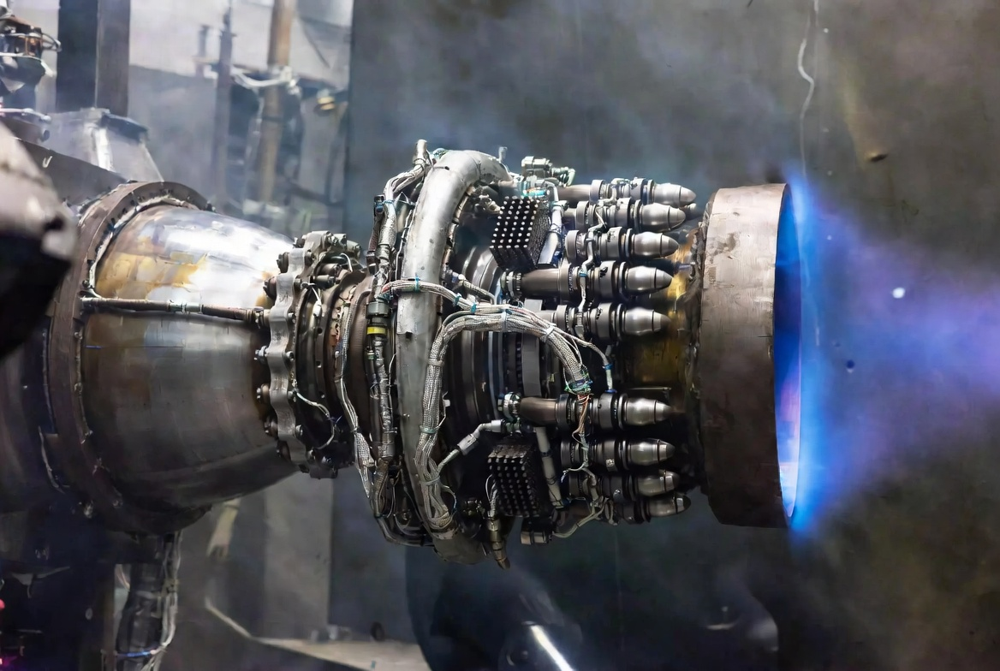
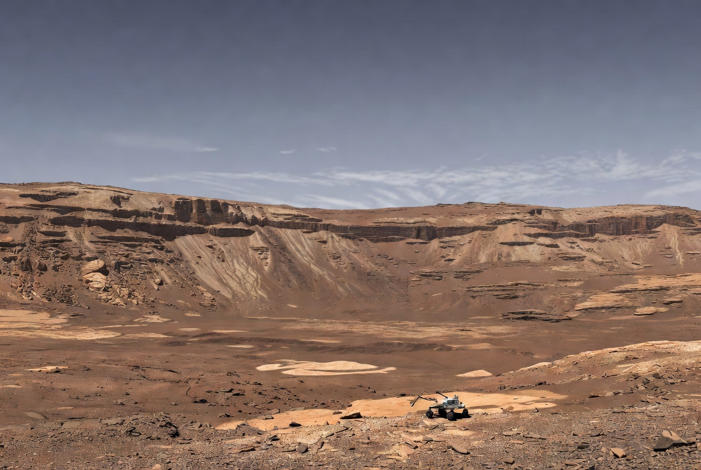
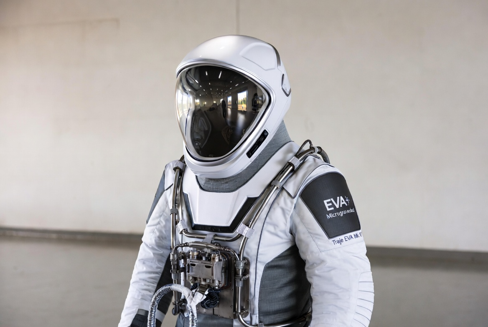
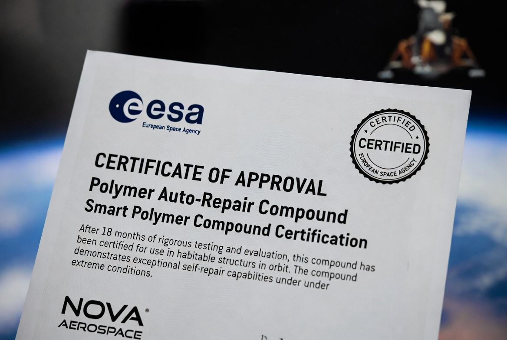
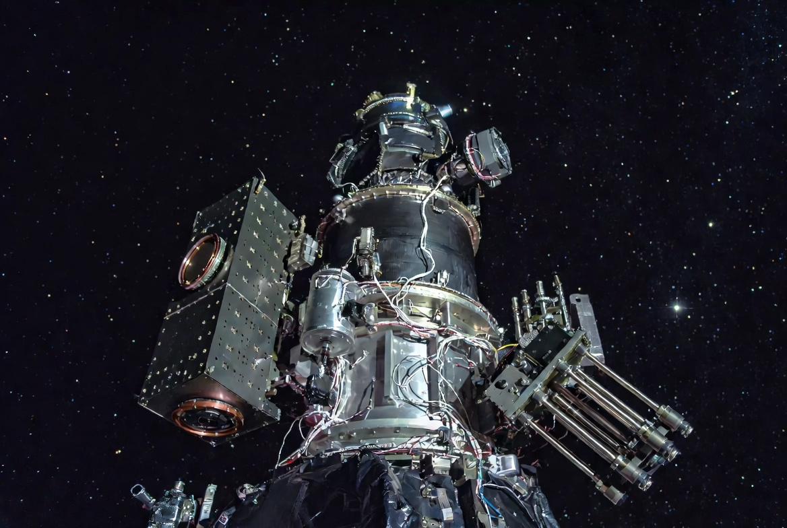

Últimas transmisiones
Reportes en tiempo real, descubrimientos científicos y actualizaciones de misión directamente desde nuestra base de control y los sistemas orbitales activos.

Pruebas exitosas del Propulsor Vesta
Nuestro equipo de ingeniería ha logrado estabilizar el flujo de plasma en el propulsor iónico durante 48 horas continuas a plena potencia, batiendo el récord mundial anterior de 31 horas.

Nuevos horizontes en Jezero
El Rover 'Crimson' ha completado su segunda campaña de exploración geológica. Las formaciones detectadas en el borde norte del cráter sugieren actividad hídrica reciente.

Mejoras en el soporte vital EVA
La nueva aleación de titanio nanoestructurada reduce el peso total del Traje EVA Mk IV en un 15%, permitiendo mayor movilidad y extendiendo la autonomía operativa a 9 horas.

Certificación ESA del polímero auto-reparable
Tras 18 meses de evaluación rigurosa, la Agencia Espacial Europea ha certificado nuestro compuesto inteligente para uso en estructuras habitadas en órbita.
Nova Aerospace cierra ronda Serie C de 240M€
La nueva financiación acelerará el desarrollo del Módulo Habitable Lunar y la expansión del centro de I+D con 120 nuevas contrataciones previstas para 2025.

El Sensor Estelar supera pruebas en espacio profundo
Instalado a bordo de la sonda Nova-7, el sistema de mapeo cuántico ha demostrado una precisión de navegación de 0,001 arcsegundos a 4 UA del Sol, sin ninguna señal de referencia externa.